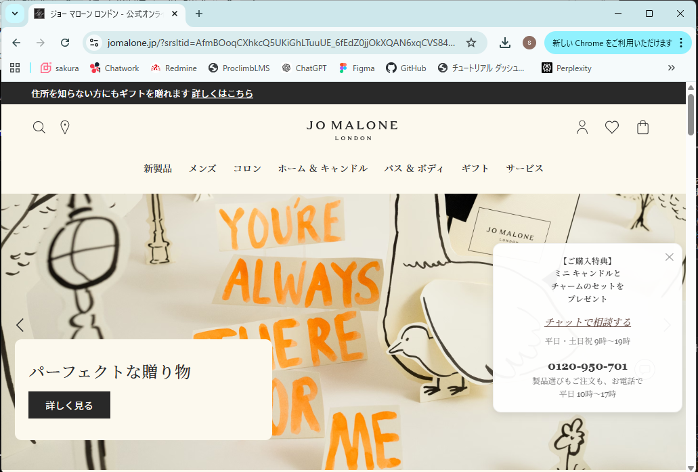
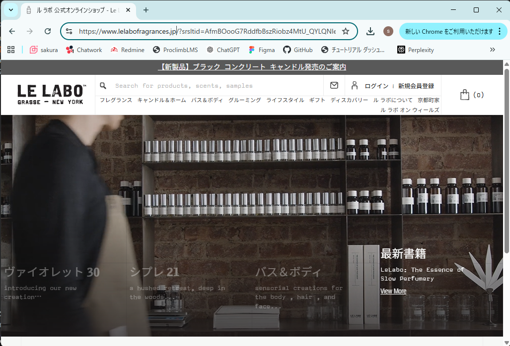
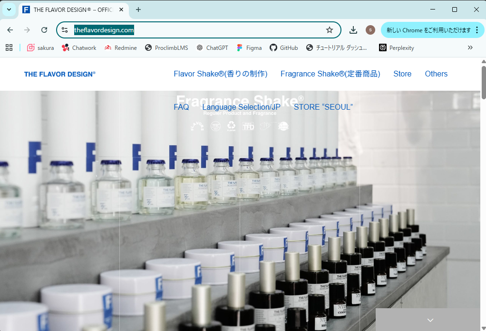

DOCUMENT 02
マーケットリサーチ
3C分析
Customer（顧客） 必須
ターゲット顧客の特徴・ニーズ・行動パターン
1. ターゲット顧客の特徴
- 年齢層：20代後半〜40代
- 職業：会社員・フリーランス・専門職（IT／マーケティング／教育など）
- ライフスタイル：
- 海外旅行を積極的に楽しむ中〜高所得層
- 「モノ消費」より「コト消費（体験）」を重視する
- SNSでの発信や共有に積極的で、旅の思い出を可視化したい傾向がある
2. 顧客のニーズや悩み
ニーズ
- 日本ならではの特別な体験をしたい
- 旅の思い出を形として残したい
- 自分だけのオリジナルなものを持ち帰りたい
悩み
- 観光体験の選択肢が多く、違いが分かりにくい
- 短い滞在期間の中で効率よく体験を選びたい
- 帰国後に体験価値が残りにくい
3. 顧客の行動パターン
情報収集の方法
- Instagram / TikTok で体験動画や写真を確認する
- Google検索で「Tokyo experience」「Things to do in Tokyo」などを調べる
- TripAdvisor や Google Reviews で口コミを比較する
購買行動
- 旅行前にオンラインで予約する
- レビューや評価を重視して比較検討する
- 体験後はSNS投稿や口コミ投稿を行う
- 気に入った商品はECで再購入する傾向がある
4. 市場のトレンド
- 体験型観光（Experience Economy）の拡大：モノより体験に価値を見出す消費行動が強まっている
- パーソナライズ志向の高まり：「自分だけ」の体験や商品への需要が増加している
- SNS起点の意思決定：視覚的に魅力が伝わるサービスが選ばれやすい
- 越境EC・リピート消費の増加：旅行後もブランドとの接点を持つユーザーが増えている
まとめ：
「体験価値・個別性・共有性」を重視し、旅の記憶を持ち帰りたい顧客層が本サービスの中心ターゲットである。
Competitor（競合） 必須
競合サービスの特徴・強み・弱み
① Le Labo（ル ラボ）
- 特徴：店舗でその場調合する高級フレグランスブランド
- 強み：高級感・ブランド力・パーソナライズ性
- 弱み：体験はあるが観光体験としての設計は弱い
- 差別化：自社は「日本文化×体験×観光ストーリー」で体験価値を拡張
② THE FLAVOR DESIGN
- 特徴：来店してオリジナル香水を作るカスタムサービス
- 強み：自由度の高いカスタマイズ・SNS映え
- 弱み：ブランドストーリーや文化的背景が弱い
- 差別化：自社は「地域素材×旅体験」でストーリー性を強化
③ Jo Malone（ジョー マローン）
- 特徴：香りのレイヤリング（重ね付け）を提案するブランド
- 強み：洗練されたブランド・ギフト需要・提案力
- 弱み：体験は接客中心で参加型ではない
- 差別化：自社は「自ら作る体験」と「レシピ保存」で体験の深さを提供
Company（自社） 必須
自分のサービスの強み・提供できる価値
1. 提供できる価値
- 体験価値：日本各地の香り素材を用いた「香りで日本を巡る」没入型体験を提供できる
- 感情価値：旅の思い出を“香り”として持ち帰り、帰国後も再体験できる
- 機能価値：香りレシピの保存により、同じ香りをECで再購入できる仕組みを提供できる
単なる商品販売ではなく、「体験・記憶・継続利用」を一体で提供する点に価値がある。
2. 独自の強み
- 体験×観光×ECの一体設計：来店体験で終わらず、再購入まで導線を設計している
- 日本素材×ストーリー性：檜・柚子・桜などの地域素材を活用し、文化的価値を付加できる
- 香りレシピのデータ化：個別最適化とリピート購入を同時に実現しやすい
- SNS拡散前提の設計：体験そのものを共有したくなる構成により、認知拡大につなげられる
3. 活用できるリソース
- デジタル基盤：Web予約、EC、顧客データ、香りレシピ管理システム
- 日本の地域素材：檜、柚子、桜など、物語性を持つ香り原料
- 観光需要：訪日外国人の体験ニーズや東京観光の需要
- SNS・口コミ：Instagram、TikTok、レビュー投稿による拡散力
- データ資産：顧客の香り嗜好、予約履歴、購買履歴
4. 弱み・課題
- ブランド認知の不足：新規サービスのため、初期集客に課題がある
- 体験品質のばらつきリスク：スタッフ対応や店舗運営に体験満足度が左右されやすい
- オペレーション負荷の高さ：体験型サービスのため、人手や現場運営コストがかかる
- 海外対応の難易度：多言語対応や文化差への配慮が必要になる
- 初期コストの大きさ：店舗、設備、システム開発への投資負担がある
まとめ：
体験・文化・データを掛け合わせ、単発消費を継続関係へ転換できることが本サービスの強みである。一方で、認知拡大と体験品質の安定化が事業成功の重要課題となる。
SWOT分析
SWOT分析マトリクス 必須
Strengths（強み）・Weaknesses（弱み）・Opportunities（機会）・Threats（脅威）
| プラス要因 | マイナス要因 | |
|---|---|---|
| 内部環境 | Strengths（強み） ・体験×ECの一体設計 → 体験で終わらず、再購入までつながる収益構造 ・日本文化×香りの独自性 → 地域素材を活用した“日本ならではの価値” ・香りレシピのデータ化 → 個別最適化とリピート促進が可能 |
Weaknesses（弱み） ・ブランド認知の低さ → 新規サービスのため集客に時間がかかる ・運営コストの高さ → 体験型サービスゆえ人件費・店舗費用が発生 ・体験品質のばらつきリスク → スタッフスキルに依存しやすい |
| 外部環境 | Opportunities（機会） ・訪日外国人の増加 → 体験型観光ニーズの拡大 ・体験消費・パーソナライズ需要の成長 → “自分だけの体験”への関心が高い ・SNSによる拡散力 → 映える体験は自然に認知拡大につながる |
Threats（脅威） ・競合サービスの増加 → カスタム香水・体験型サービスの参入拡大 ・観光市場の外部リスク → 為替・情勢・パンデミックなどの影響 ・模倣されやすいビジネスモデル → 体験コンセプトはコピーされやすい |
STP分析
Segmentation（市場細分化） 必須
市場をどのような基準で分類するか
1. 地理的変数（地域・都市規模）
地域
- 欧米（アメリカ・ヨーロッパ）：高級志向・ブランド重視
- アジア（中国・韓国・東南アジア）：トレンド・SNS重視
- 日本国内：日常使い・ギフト需要
都市規模
- 大都市：体験・トレンド志向が強い
- 中規模都市：品質と価格のバランス重視
- 地方：実用性・価格重視
2. 人口統計的変数（年齢・性別・職業・年収）
年齢
- 20代：トレンド、SNS、自己表現を重視
- 30代：品質、ライフスタイル、実用性を重視
- 40代以上：ブランド、信頼性、上質感を重視
性別
- 女性：美容、香り、自己表現への関心が高い
- 男性：身だしなみ、清潔感、印象管理を重視
- ジェンダーレス層：ユニセックス性や個性を重視
職業
- 会社員：日常使い、気分転換、オンオフ切替を重視
- フリーランス／クリエイター：個性や表現性を重視
- 富裕層・専門職：高級感、限定性、体験価値を重視
年収
- 低〜中所得：コストパフォーマンス重視
- 中〜高所得：品質やブランド価値を重視
- 高所得：体験、パーソナライズ、高級感を重視
3. 心理的変数（ライフスタイル・価値観）
ライフスタイル
- 体験重視型：旅行やアクティビティを楽しみたい
- 美容・セルフケア志向：自分を整える時間を大切にする
- ミニマル・ナチュラル志向：自然素材やシンプルな暮らしを好む
価値観
- 自己表現：自分らしさや個性を大切にする
- サステナビリティ：自然素材や環境配慮に価値を感じる
- ストーリー重視：背景や文化的意味に魅力を感じる
4. 行動変数（利用頻度・求めるベネフィット）
利用頻度
- 日常使い：毎日香りを楽しむ習慣がある
- 特別用途：デート、イベント、ギフトで利用する
- 体験目的：旅行や観光時に特別な思い出として利用する
求めるベネフィット
- リラックス・癒し：気分転換やストレス軽減
- 自己表現・個性：自分らしさを香りで表現したい
- ギフト・思い出：特別感や記念性を求める
- 高級感・ステータス：上質なブランド体験を重視する
まとめ：
香り市場は「体験」「自己表現」「癒し」を軸に多層的に細分化できる。特に、体験価値とパーソナライズ性を求める層は、今後の成長が期待できる有望セグメントである。
Targeting（ターゲット選定） 必須
どのセグメントを狙うか、その理由
1. 訪日 × 体験重視 × SNS発信層
選定したセグメント
- 地域：欧米・アジアの訪日観光客（都市部）
- 年齢：20代後半〜30代
- 心理：体験重視・自己表現・SNS発信志向
- 行動：旅行前予約、体験後にSNS投稿・口コミ投稿
市場規模（推定）
- 香り市場全体は世界で大規模に成長しており、体験型観光市場も拡大傾向にある
- 本サービスが狙う「訪日観光 × 体験型 × 香り」領域は、数千億円規模に発展可能な周辺市場と考えられる
※就活用提案書のため、公開市場情報をもとにした概算ベースの推定
選定理由
- 訪日外国人は「モノ」より「体験」に価値を感じやすい
- SNSでの発信により、体験そのものが集客導線として機能する
- 「香り × 日本文化」というテーマは、東京観光の中でも差別化しやすい
このセグメントのニーズ
- 日本らしい唯一無二の体験をしたい
- SNSでシェアしたくなる見た目やストーリーがほしい
- 短時間でも満足度の高い観光プランを求めている
2. 高付加価値志向 × パーソナライズ志向層
選定したセグメント
- 年齢：30代〜40代
- 職業：専門職・高所得層・感度の高いビジネスパーソン
- 心理：品質重視・個別性重視・ストーリー重視
- 行動：体験後にECで継続購入、ギフト利用も想定
市場規模（推定）
- 高価格帯・プレミアムフレグランス市場は拡大傾向にあり、利益率の高いセグメントとして期待できる
- 本サービスでは、体験後のEC再購入によりLTVの高い顧客層として重要である
※市場全体の一部を対象とするが、単価と継続購入の観点で収益性が高い
選定理由
- 自分だけの香りを求めるパーソナライズ需要と相性が良い
- 地域素材や文化背景など、ストーリー性のある商品に価値を感じやすい
- 体験で終わらず、継続購入につながるため事業収益の柱になりやすい
このセグメントのニーズ
- 高品質で安心感のある香り製品を選びたい
- 自分だけの香りを継続して使いたい
- 背景や文化的意味を含んだ商品を購入したい
まとめ：
本サービスは、「話題を生む訪日体験層」と「利益を生む高付加価値層」の2つを主要ターゲットとするのが有効である。前者で認知拡大と集客を狙い、後者で継続購入とLTV向上を実現する。
Positioning（ポジショニング） 必須
競合に対してどのような位置づけを取るか
1. 競合サービスとの差別化軸
軸①：体験性（低 ←→ 高）
どれだけ参加型・没入型の体験価値を提供できるかを示す軸。商品購入中心のサービスは低く、来店して香りを作る・学ぶ・楽しむプロセスが深いサービスほど高く位置づけられる。
軸②：ストーリー性（低 ←→ 高）
どれだけ文化・地域・背景に基づく物語性を持っているかを示す軸。香りそのものの機能やブランド性だけでなく、日本各地の素材や文化的な意味を感じられるほど高く位置づけられる。
2. ポジショニングマップ上での位置
本サービスは「体験性が高い」「ストーリー性が高い」という2つを両立するため、ポジショニングマップでは右上に位置する。
本サービスは、既存の香りブランドやカスタムフレグランス体験よりも、「日本文化を背景にした物語性」と「参加型体験」の両面を強く打ち出すポジションを取る。
3. そのポジションを取る理由
- 空白領域を狙えるため：既存サービスは「体験はあるが文化的ストーリーが弱い」または「ブランドストーリーはあるが参加型体験が弱い」傾向がある。本サービスはその両方を兼ね備えることで差別化できる。
- 訪日観光客のニーズと一致するため：ターゲット顧客は、日本らしさを感じられる体験と、記憶に残る観光体験を求めている。そのため、体験性とストーリー性の両立は顧客価値と直結する。
- 高付加価値化しやすいため：物語性によってブランド価値を高め、体験性によって価格プレミアムを正当化できる。価格競争に巻き込まれにくいポジションを取りやすい。
- 継続購入につながるため：体験として記憶に残り、文化的背景に共感することで愛着が形成される。これがEC再購入や口コミ拡散につながる。
まとめ：
本サービスは、「体験性」と「ストーリー性」の両方が高い右上ポジションを狙うことで、競合との差別化と高付加価値化を実現する。特に、訪日外国人にとっての“日本らしい特別な体験”として強い訴求力を持つ。
4P / 4C 分析
4P・4C分析 必須
| 4P（売り手視点） | 内容 | 4C（買い手視点） | 内容 |
|---|---|---|---|
| Product （製品） |
・日本素材（檜・柚子など）を使った香り制作体験 ・オリジナル香りレシピの保存 ・体験後のEC再購入機能 |
Customer Value （顧客価値） |
・「日本を体験した記憶」を持ち帰れる ・世界に一つだけの香りを作れる ・帰国後も旅の体験を再現できる |
| Price （価格） |
・体験：5,000〜7,000円程度 ・商品：1,000〜20,000円（既存市場の中価格〜やや高価格帯） |
Cost （顧客コスト） |
・金銭コスト：観光体験として許容範囲 ・時間コスト：1〜2時間で完結 ・心理コスト：初体験でも安心できる設計が必要 |
| Place （流通） |
・東京（浅草）に店舗展開 ・Web予約（訪日前予約） ・ECでの再購入 |
Convenience （利便性） |
・観光ルート内でアクセスしやすい ・スマホで簡単に予約できる ・帰国後もオンラインで購入できる 👉 “旅行前→旅行中→旅行後”すべてで接点を持てる |
| Promotion （販促） |
・SNS（Instagram・TikTok） ・口コミ（レビューサイト） ・インフルエンサー活用 |
Communication （対話） |
・体験をシェアしたい（SNS投稿） ・他人の体験レビューを参考にする ・ブランドと継続的につながりたい 👉 “広告”ではなく“体験そのものがプロモーション” |
競合サイト分析
競合サイト 1 必須
サイト名・URL・スクリーンショット・分析
① Jo Malone

- 第一印象：高級感・洗練・余白を活かしたミニマルデザイン
- 良い点：
- 統一されたブランド世界観
- シンプルで直感的なUI
- ギフト訴求が強い
- 改善点：
- 体験要素が弱い
- 商品中心でストーリーの深さが限定的
- 取り入れたい要素：
- 高級感あるビジュアル設計
- シンプルなナビゲーション
競合サイト 2 必須
サイト名・URL・スクリーンショット・分析
② Le Labo

- 第一印象：クラフト感・個性・ブランドストーリー重視
- 良い点：
- 世界観が強いストーリーテリング
- 商品ごとの個性表現
- 店舗体験との連動
- 改善点：
- UIがやや分かりにくい
- 予約導線が弱い
- 取り入れたい要素：
- ストーリー性のあるコピー
- ブランド背景の訴求
競合サイト 3 必須
サイト名・URL・スクリーンショット・分析
③ THE FLAVOR DESIGN

- 第一印象：SNS映え・カジュアル・体験重視
- 良い点：
- 体験の楽しさが伝わるビジュアル
- 若年層向けの親しみやすさ
- 直感的なUI
- 改善点：
- 高級感・ブランド深度が弱い
- 長期的なブランド価値が見えにくい
- 取り入れたい要素：
- 体験の可視化（写真・動画）
- SNS連携の強化